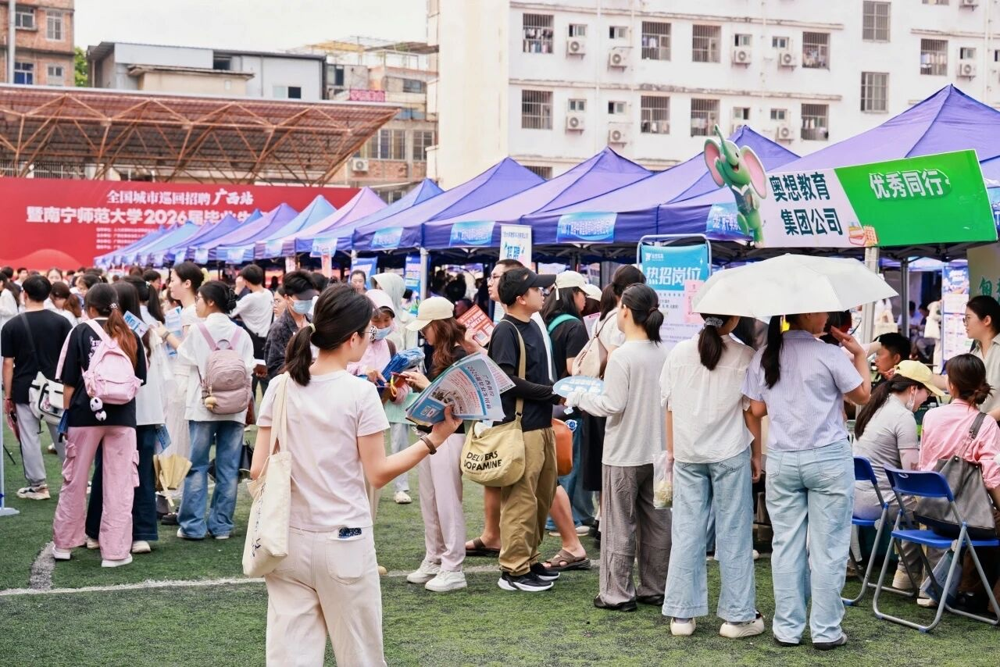
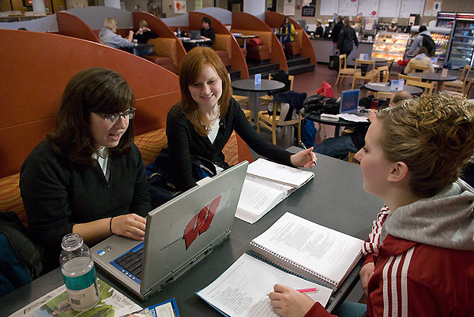

开始关注就业数据和学长学姐的选择。
就业数据终端
01/12
1270万
2026年7月 · 大二快结束
我的毕业预演
还没真正求职，但 1270 万人的毕业季，已经让我开始认真看见就业。
身份
9月升大三的学生
时间定位
这是一个准大三的七月
我不是 2026 届毕业生，也还没有求职经历。这个作品更像一次提前预演：先看见数据，再想清楚自己可以准备什么。
把课程作业、项目和技能慢慢整理起来。
用真实任务检验自己适合什么岗位。
找工作、升学、考公或其他方向。
第一个大数字
1270 万人的毕业季
0万
教育部预计，2026 届全国普通高校毕业生规模为 1270 万人，同比增加 48 万人。
我的理解
这不是说每个人都在抢同一个岗位，但它提醒我：大学生就业已经不是临毕业才开始想的事。
压力从哪里来
“就业难”不是一句话
我以前以为就业压力主要来自人数。看完资料后才发现，真正让人紧张的还有这些细节。

机会也在增加
招聘活动不是只有“海投”
2026 届春季促就业攻坚行动中，各地各高校预计举办校园招聘活动 1.1 万余场，提供岗位信息超 1200 万个。
从春招到离校后
就业服务其实是一条线
岗位
指导
帮扶
拓岗位、办招聘、做政策宣传。
4000余场招聘活动，超500万个岗位信息。
登记、指导、岗位推荐、培训和权益维护。
看到这里，我的感受是：机会不是没有，但需要主动去找、去筛选、去理解。
做个小选择
如果我是 2026 届毕业生
点一个你最可能先考虑的方向。
选择一个方向，这里会出现更具体的准备提醒。
回到现在
我才准大三，不需要假装成熟
“提前准备”不是从现在开始焦虑到崩溃，而是把未来要面对的问题，提前拆成一些可以做到的小动作。
大二结束的我，还没有 offer，也没有求职经验。但我可以先学会看信息、做作品、理解岗位。
数字媒体技术视角
专业能力也能变成求职语言
点一个能力，看看它怎么写进作品集。
这门课让我意识到：找工作不是只写“会软件”，而是要拿出能被看见的页面、内容、数据和复盘。
一份简历之前
先做一张准备清单
0%
已完成 0/5 项
回到课程
就业信息也需要被“运营”
如果就业政策只是一份长通知，很多学生可能看过就忘。新媒体运营的价值，是把重要信息转成更容易理解、愿意转发、能促成行动的内容。

2026届预计
1270万
最后
把焦虑变成准备
我现在还没真正求职，但可以先把未来的大问题拆成今天能做的小动作。
- 关注学校就业平台和国家大学生就业服务平台。
- 每月整理一次课程成果，留下可展示的证据。
- 主动问学长学姐：岗位到底看什么。
- 尝试一次实习、项目或账号运营实践。
- 不把就业想成一场突击，而是一段持续准备。
数据来源
教育部、新华社、国家统计局、人力资源社会保障部等公开资料。